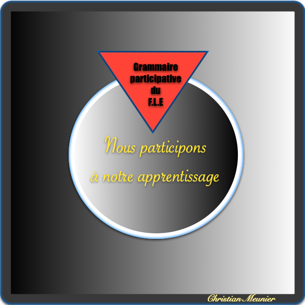

|  |
La Grammaire participative du FLEChristian Meunier (Freie Universität Berlin)Il s'agit d'un site présentant le programme "La Grammaire participative du FLE", qui s"adresse aux enseignantes et aux futurs enseignantes, ainsi qu'à leurs homologues masculins, pour les initier à l'emploi alt="du système La Grammaire participative du FLE dans leur enseignement." |
|
Ce programme s'adresse:
|
|
Le site la-grammaire-du-fle.comCe site vous propose tout le matériel nécessaire :
C'est-à-dire les explications, les tests, autocorrigés, les exercices autocorrigés, les conseils pour réviser ou apprendre le FLE. |
Pour aller voir le site : La-grammaire-du-fle.com= L'ensemble des sites de "la-grammaire-du-fle" |
Le site la-grammaire-du-fle.frCe site est plutôt réservé aux enseignantes et :
|
Pour aller voir le site: |
Ce site, la Grammaire participative du FLECe site vous propose:
|
Pour trouver la suite de ce site: La grammaire participative du FLE.fr= aborder et résoudre les problèmes. |
Pour établir un contact avec les auteurs.Si vous voulez contacter les auteurs, vous pouvez envoyer un courriel (email) en précisant vos raisons et en exposant ce que vous attendez d'une réponse des auteurs. Et n'oubliez pas de laisser votre adresse, si possible exacte. |
© Christian Meunier /Users/christianmeunier/Desktop/HTML/mon site/index.html